For this lab, we’ll mostly rely on the igraph and migraph packages for analysis. The data we’re going to use is included in the migraph package
suppressPackageStartupMessages(library(igraph))
suppressPackageStartupMessages(library(migraph))
data("ison_m182", package = "migraph")
# ?migraph::ison_m182Note that you do not need to load the package using library() to get the data. Now you know how to create new matrices in R, load .csv files, saved .RData files, and data from packages!
Working with Multiplex Networks
This dataset is multiplex, meaning that it contains several different types of ties: friendship, social and task interactions.
The network is anonymous, but I think it would be nice to add some names, even if it’s just pretend. Luckily, I’ve added a function for this. This makes plotting the network just a wee bit more accessible:
ison_m182 <- to_named(ison_m182)
autographr(ison_m182)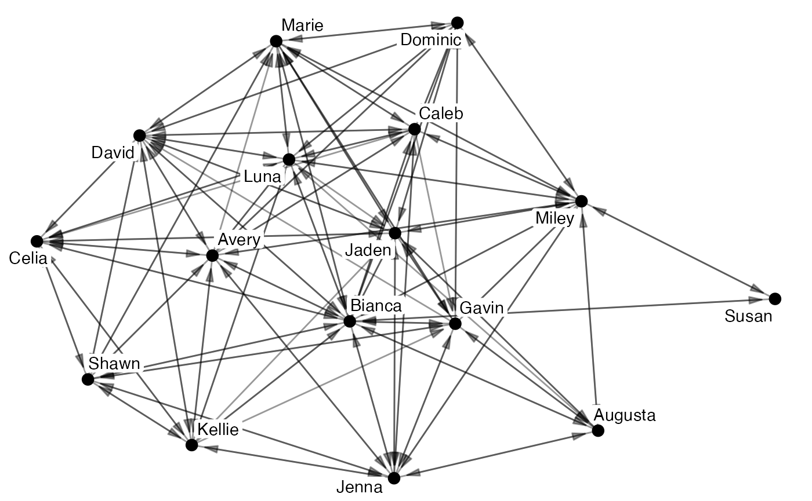
There are actually three different types of tie here. Let’s separate them out into separate networks.
(m182_friend <- to_uniplex(ison_m182, "friend_tie"))
#> # A tbl_graph: 16 nodes and 62 edges
#> #
#> # A directed simple graph with 3 components
#> #
#> # Node Data: 16 × 1 (active)
#> name
#> <chr>
#> 1 Melinda
#> 2 Donald
#> 3 Josue
#> 4 Beth
#> 5 Effie
#> 6 Tonya
#> # … with 10 more rows
#> #
#> # Edge Data: 62 × 3
#> from to weight
#> <int> <int> <dbl>
#> 1 2 1 1
#> 2 2 7 1
#> 3 2 8 1
#> # … with 59 more rows
gfriend <- autographr(m182_friend) + ggtitle("Friendship")
(m182_social <- to_uniplex(ison_m182, "social_tie"))
#> # A tbl_graph: 16 nodes and 129 edges
#> #
#> # A directed simple graph with 1 component
#> #
#> # Node Data: 16 × 1 (active)
#> name
#> <chr>
#> 1 Melinda
#> 2 Donald
#> 3 Josue
#> 4 Beth
#> 5 Effie
#> 6 Tonya
#> # … with 10 more rows
#> #
#> # Edge Data: 129 × 3
#> from to weight
#> <int> <int> <dbl>
#> 1 1 5 1.2
#> 2 1 8 0.15
#> 3 1 9 2.85
#> # … with 126 more rows
gsocial <- autographr(m182_social) + ggtitle("Social")
(m182_task <- to_uniplex(ison_m182, "task_tie"))
#> # A tbl_graph: 16 nodes and 88 edges
#> #
#> # A directed simple graph with 1 component
#> #
#> # Node Data: 16 × 1 (active)
#> name
#> <chr>
#> 1 Melinda
#> 2 Donald
#> 3 Josue
#> 4 Beth
#> 5 Effie
#> 6 Tonya
#> # … with 10 more rows
#> #
#> # Edge Data: 88 × 3
#> from to weight
#> <int> <int> <dbl>
#> 1 1 5 0.3
#> 2 1 9 0.3
#> 3 1 10 0.3
#> # … with 85 more rows
gtask <- autographr(m182_task) + ggtitle("Task")
grid.arrange(gfriend, gsocial, gtask, ncol = 3)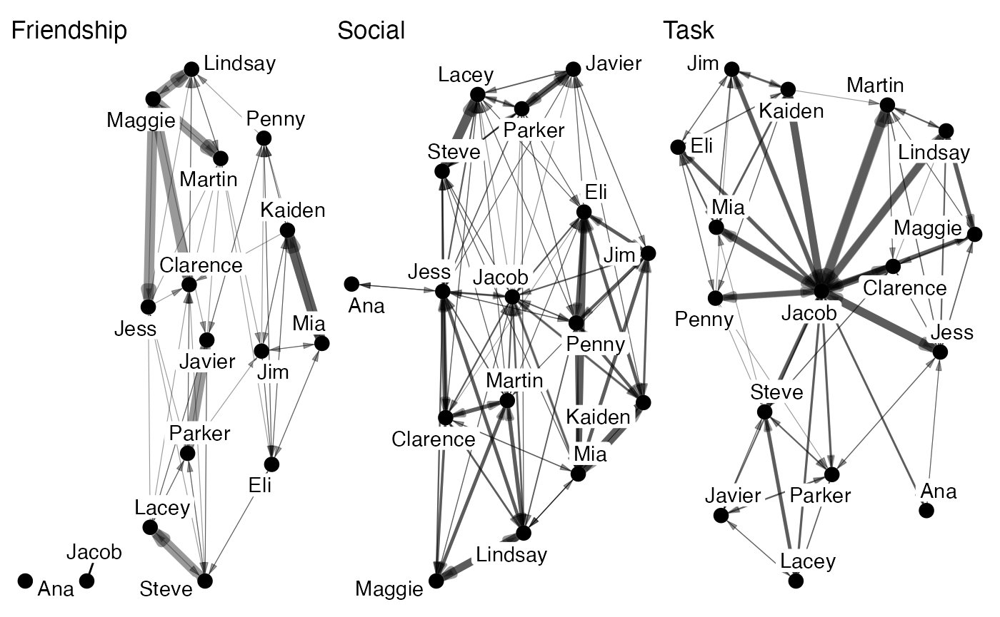
Cohesion
Let’s concentrate on the task network for now and calculate a few basic measures of cohesion: density, reciprocity, transitivity, and components.
Density
Because this is a directed network,
but we can also just use the migraph function…
graph_density(m182_task)
#> [1] 0.3666667Same result? Is this high or low?
Closure
Next let’s calculate reciprocity.
graph_reciprocity(m182_task)
#> [1] 0.9318182Next let’s calculate transitivity.
graph_transitivity(m182_task)
#> [1] 0.5684211What can we say about task closure in this network?
Components
Now let’s look at the friend network.
graph_components(m182_friend)
#> [1] 3
graph_components(m182_friend, method = "strong")
#> [1] 4How many components are there? Why?
We can use the membership vector in the resulting object to color nodes:
m182_friend <- m182_friend %>%
mutate(weak_comp = node_components(m182_friend),
strong_comp = node_components(m182_friend, method = "strong"))
autographr(m182_friend, node_color = "weak_comp")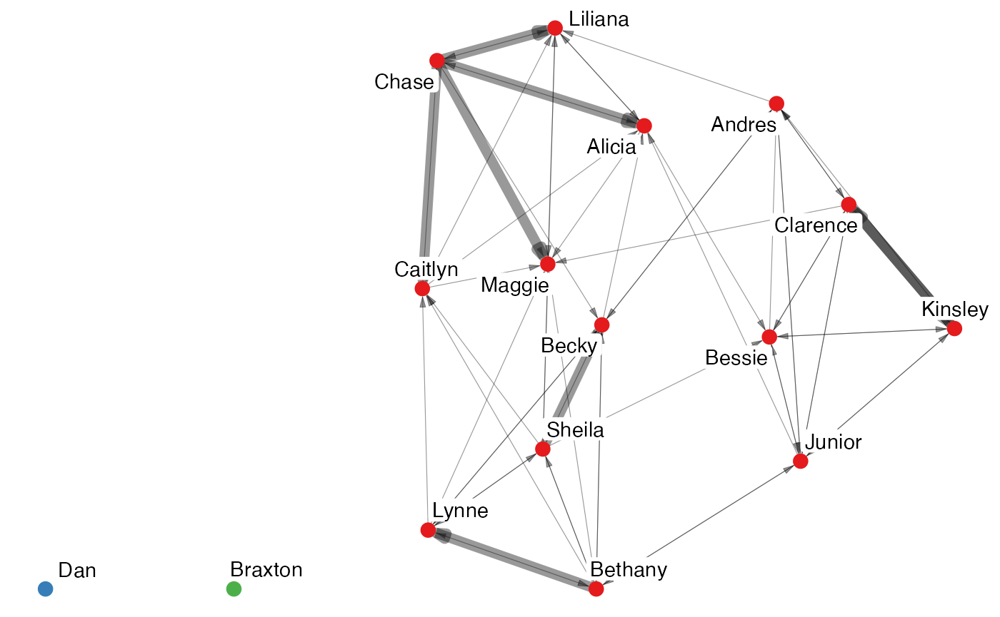
autographr(m182_friend, node_color = "strong_comp")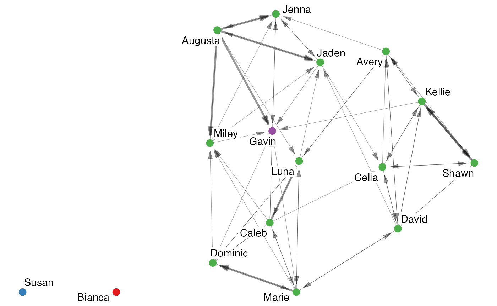
Community Detection
Ok, the friendship network has 3-4 components, but how many ‘groups’ are there? Just visually, it looks like there are two denser clusters within the main component.
Today we’ll use the friend subgraph for exploring community detection methods. For clarity and simplicity, concentrate on the main component and consider friendship undirected:
(m182_friend <- to_main_component(m182_friend))
#> # A tbl_graph: 14 nodes and 62 edges
#> #
#> # A directed simple graph with 1 component
#> #
#> # Node Data: 14 × 3 (active)
#> name weak_comp strong_comp
#> <chr> <dbl> <dbl>
#> 1 Melinda 1 4
#> 2 Donald 1 3
#> 3 Josue 1 3
#> 4 Effie 1 3
#> 5 Tonya 1 3
#> 6 Roxanne 1 3
#> # … with 8 more rows
#> #
#> # Edge Data: 62 × 3
#> from to weight
#> <int> <int> <dbl>
#> 1 2 1 1
#> 2 2 6 1
#> 3 2 7 1
#> # … with 59 more rows
(m182_friend <- to_undirected(m182_friend))
#> # A tbl_graph: 14 nodes and 42 edges
#> #
#> # An undirected simple graph with 1 component
#> #
#> # Node Data: 14 × 3 (active)
#> name weak_comp strong_comp
#> <chr> <dbl> <dbl>
#> 1 Melinda 1 4
#> 2 Donald 1 3
#> 3 Josue 1 3
#> 4 Effie 1 3
#> 5 Tonya 1 3
#> 6 Roxanne 1 3
#> # … with 8 more rows
#> #
#> # Edge Data: 42 × 3
#> from to weight
#> <int> <int> <dbl>
#> 1 1 2 1
#> 2 1 4 1
#> 3 3 4 2
#> # … with 39 more rows
autographr(m182_friend)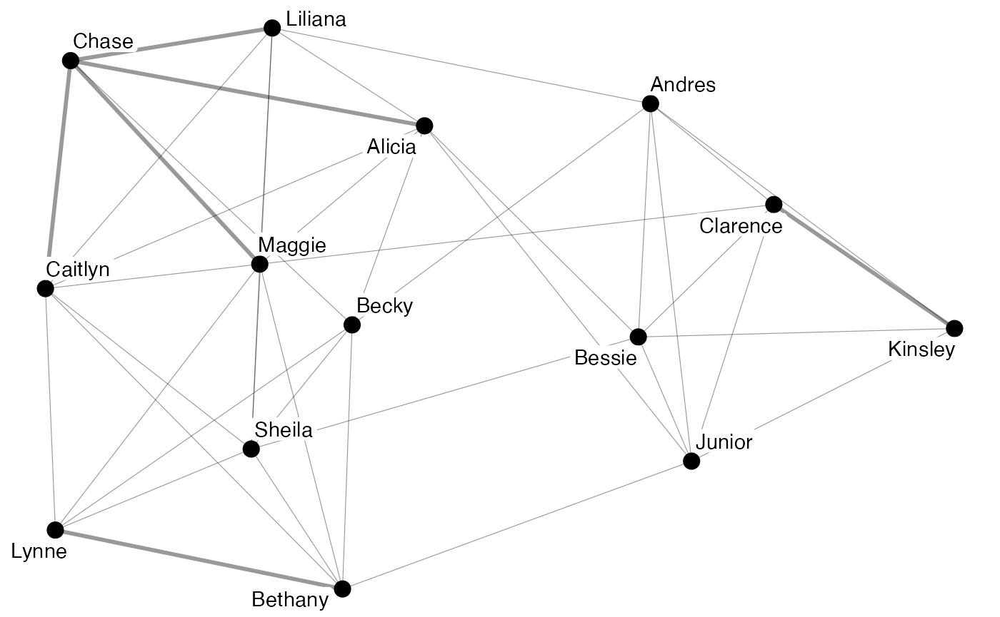
Comparing m182_friend before and after these operations, you’ll notice the number of edges decreases as reciprocated directed ties are consolidated into single undirected ties, and the number of vertices decreases as isolates are removed.
There is no one single best community detection algorithm. Instead there are several, each with their strengths and weaknesses. Since this is a rather small network, we’ll focus on the following methods: walktrap, edge betweenness, and fast greedy. igraph also includes others though too; all are named cluster_… As you use them, consider how they portray clusters and consider which one(s) afford a sensible view of the social world as cohesively organized.
Walktrap
This algorithm detects communities through a series of short random walks, with the idea that nodes encountered on any given random walk are more likely to be within a community than not. It was proposed by Pons and Latapy (2005).
The algorithm initially treats all nodes as communities of their own, then merges them into larger communities, still larger communities, and so on. In each step a new community is created from two other communities, and its ID will be one larger than the largest community ID so far. This means that before the first merge we have n communities (the number of vertices in the graph) numbered from zero to n-1. The first merge creates community n, the second community n+1, etc. This merge history is returned by the function: # ?igraph::cluster_walktrap
Note the “steps=” argument that specifies the length of the random walks. This is set to 4 by default, which is what is recommended by Pons and Latapy. However, Waugh et al (2009) found that for many groups (Congresses), these lengths did not provide the maximum modularity score. To be thorough in their attempts to optimize modularity, they ran the walktrap algorithm 50 times for each group (using random walks of lengths 1–50) and selected the network partition with the highest modularity value from those 50. They call this the “maximum modularity partition” and insert the parenthetical “(though, strictly speaking, this cannot be proven to be the optimum without computationally-prohibitive exhaustive enumeration (Brandes et al. 2008)).”
So let’s try and get a community classification using the walktrap algorithm with path lengths of the random walks specified to be 50.
friend_wt <- cluster_walktrap(m182_friend, steps=50)
friend_wt
#> IGRAPH clustering walktrap, groups: 2, mod: 0.33
#> + groups:
#> $`1`
#> [1] "Donald" "Roxanne" "Lucas" "Gene" "Vicky"
#>
#> $`2`
#> [1] "Melinda" "Josue" "Effie" "Tonya" "Harper" "Sandra"
#> [7] "Summer" "Charlene" "Clifford"
#> This says that dividing the graph into 2 communities maximises modularity, one with the nodes 2, 7, 8, 13, 14, and the other 1, 3, 5, 6, 9, 10, 11, 12, 15, resulting in a modularity of 0, -0.0560204, -0.0241837, -0.02, -0.0261224, -0.0076531, 0.0076531, 0.0546939, 0.0760204, 0.1005102, 0.1641837, 0.2284694, 0.3264286, 0.
ADVANCED, we will also come back to this next week: We can visualise how clusters are hierarchically nested in a dendrogram.
friend_dend <- as.dendrogram(friend_wt, use.modularity=TRUE)
ggtree(friend_dend)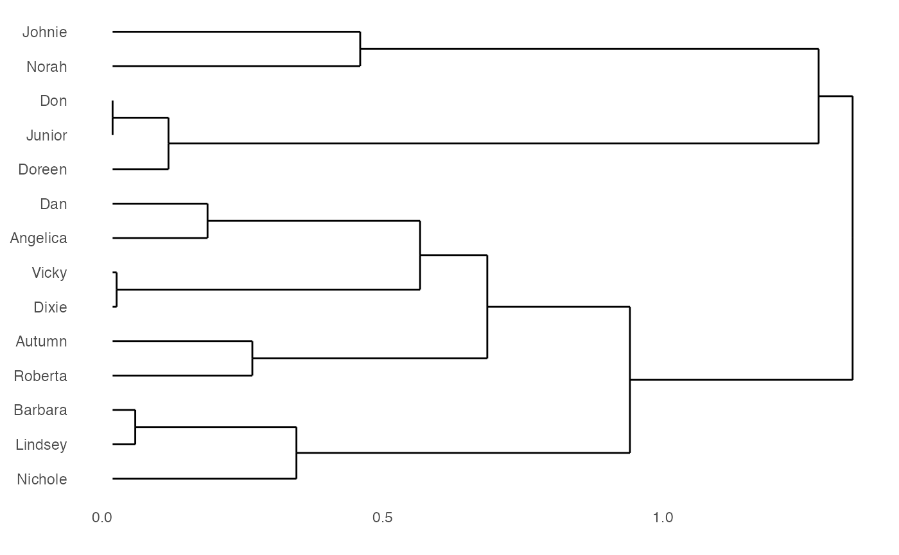
Note the x-axis reflects the distance metric used by the walktrap algorithm. For more on this see Pons and Latapy, https://arxiv.org/abs/physics/0512106.
We can also visualise the clusters on the original network How does the following look? Plausible?
m182_friend <- m182_friend %>%
mutate(walk_comm = friend_wt$membership)
autographr(m182_friend, node_color = "walk_comm")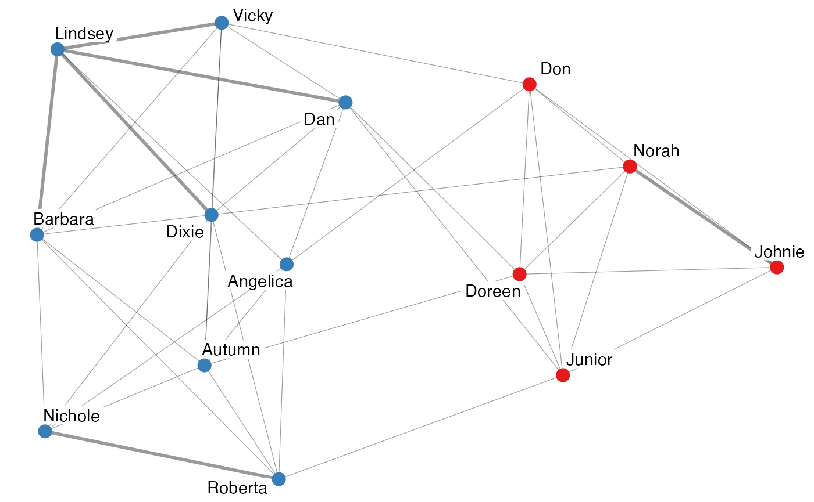
# to be fancy, we could even draw the group borders around the nodes
autographr(m182_friend, node_group = "walk_comm")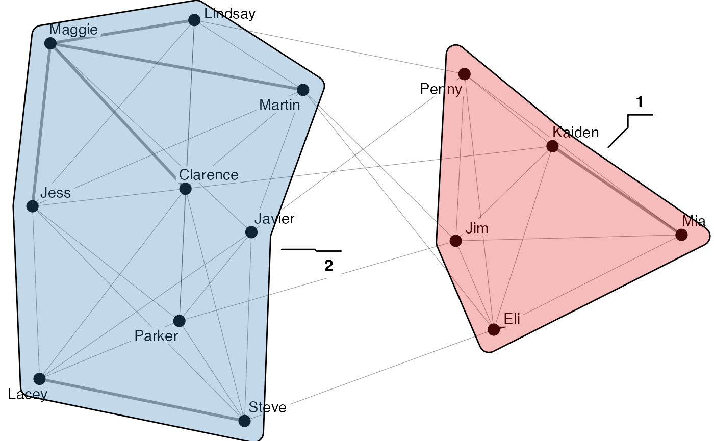
# or both!
autographr(m182_friend,
node_color = "walk_comm",
node_group = "walk_comm")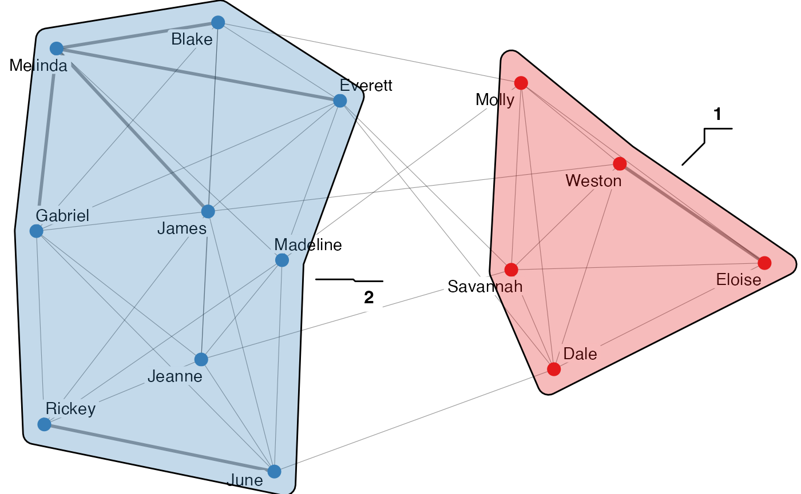
This can be helpful when polygons overlap to better identify membership Or use node color and size to indicate other attributes…
Edge Betweenness
Edge betweenness ?cluster_edge_betweenness is like betweenness centrality but for edges not nodes. The edge-betweenness score of an edge measures the number of shortest paths from one vertex to another that go through it.
The idea of the edge-betweenness based community structure detection is that it is likely that edges connecting separate clusters have high edge-betweenness, as all the shortest paths from one cluster to another must traverse through them. So if we iteratively remove the edge with the highest edge-betweenness score we will get a hierarchical map (dendrogram) of the communities in the graph.
The following works similarly to walktrap, but no need to set a step length.
friend_eb <- cluster_edge_betweenness(m182_friend)
#> Warning in cluster_edge_betweenness(m182_friend): At community.c:461 :Membership
#> vector will be selected based on the lowest modularity score.
#> Warning in cluster_edge_betweenness(m182_friend): At community.c:468 :Modularity
#> calculation with weighted edge betweenness community detection might not make
#> sense -- modularity treats edge weights as similarities while edge betwenness
#> treats them as distances
friend_eb
#> IGRAPH clustering edge betweenness, groups: 3, mod: 0.41
#> + groups:
#> $`1`
#> [1] "Melinda" "Harper" "Sandra" "Charlene" "Clifford"
#>
#> $`2`
#> [1] "Donald" "Roxanne" "Lucas" "Gene" "Vicky"
#>
#> $`3`
#> [1] "Josue" "Effie" "Tonya" "Summer"
#> How does community membership differ here from that found by walktrap?
We can see how the edge betweenness community detection method works here: http://jfaganuk.github.io/2015/01/24/basic-network-analysis/ We can see which edges were removed in which order here:
friend_eb$removed.edges
#> [1] 34 8 38 1 39 31 10 37 12 13 15 2 22 18 16 4 24 35 28 29 27 23 14 36 26
#> [26] 41 17 3 5 19 6 20 7 30 9 11 32 21 25 40 33 42
friend_eb$modularity
#> [1] -0.07224490 -0.05285714 -0.03438776 0.02806122 0.04653061 0.07102041
#> [7] 0.12418367 0.17316327 0.23836735 0.28132653 0.31602041 0.40785714
#> [13] 0.32642857 0.00000000
ggtree(as.dendrogram(friend_eb, use.modularity = T))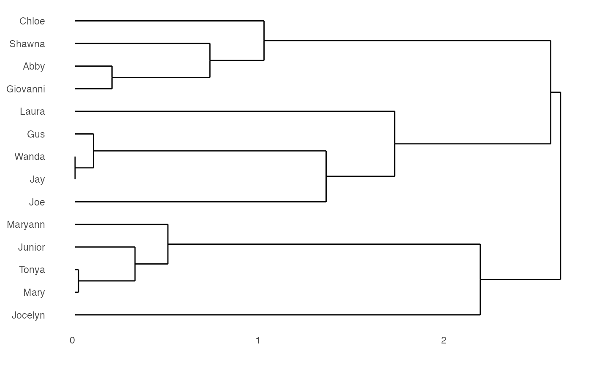
To visualise the result:
m182_friend <- m182_friend %>%
mutate(eb_comm = friend_eb$membership)
autographr(m182_friend,
node_color = "eb_comm",
node_group = "eb_comm")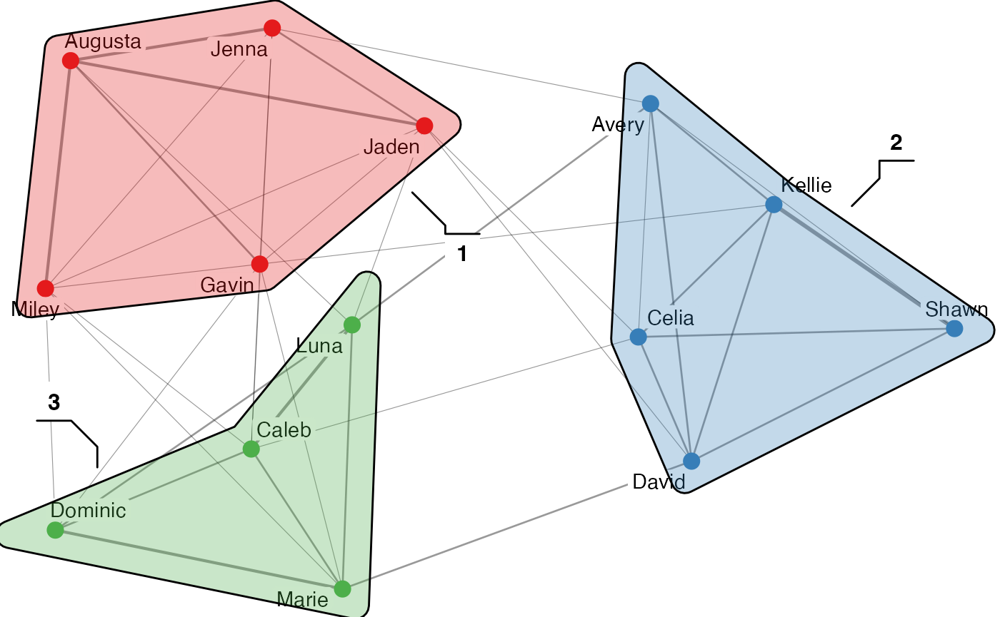
For more on this algorithm, see M Newman and M Girvan: Finding and evaluating community structure in networks, Physical Review E 69, 026113 (2004), https://arxiv.org/abs/cond-mat/0308217.
Fast Greedy
This algorithm ?cluster_fast_greedy is the Clauset-Newman-Moore algorithm. Whereas edge betweenness was divisive (top-down), the fast greedy algorithm is agglomerative (bottom-up).
At each step, the algorithm seeks a merge that would most increase modularity. This is very fast, but has the disadvantage of being a greedy algorithm, so it might not produce the best overall community partitioning, although I personally find it both useful and in many cases quite “accurate”.
friend_fg <- cluster_fast_greedy(m182_friend)
friend_fg # Does this result in a different community partition?
#> IGRAPH clustering fast greedy, groups: 3, mod: 0.41
#> + groups:
#> $`1`
#> [1] "Melinda" "Harper" "Sandra" "Charlene" "Clifford"
#>
#> $`2`
#> [1] "Josue" "Effie" "Tonya" "Summer"
#>
#> $`3`
#> [1] "Donald" "Roxanne" "Lucas" "Gene" "Vicky"
#>
friend_fg$modularity # Compare this to the edge betweenness procedure
#> [1] -7.224490e-02 -2.520408e-02 1.357143e-02 6.673469e-02 1.157143e-01
#> [6] 1.484694e-01 1.831633e-01 2.483673e-01 2.802041e-01 3.180612e-01
#> [11] 3.731633e-01 4.078571e-01 3.264286e-01 1.110223e-16
# Again, we can visualise these communities in different ways:
ggtree(as.dendrogram(friend_fg, use.modularity = T)) # dendrogram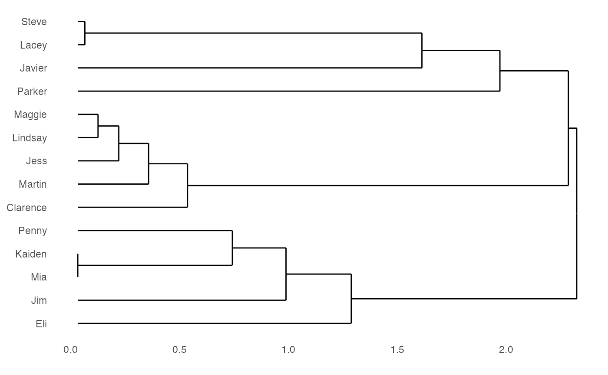
m182_friend <- m182_friend %>%
mutate(fg_comm = friend_fg$membership)
autographr(m182_friend,
node_color = "fg_comm",
node_group = "fg_comm")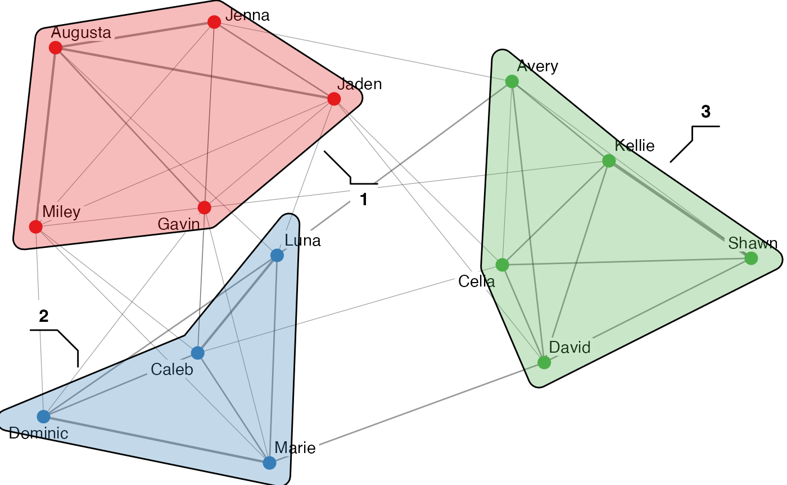
See A Clauset, MEJ Newman, C Moore: Finding community structure in very large networks, https://arxiv.org/abs/cond-mat/0408187
Two-mode network: Southern women
The next dataset is also available in migraph. Let’s take a look at the loaded objects.
data("southern_women")
southern_women
#> IGRAPH f8d9f5f UN-B 32 93 --
#> + attr: type (v/l), name (v/c)
#> + edges from f8d9f5f (vertex names):
#> [1] EVELYN --E1 EVELYN --E2 EVELYN --E3 EVELYN --E4 EVELYN --E5
#> [6] EVELYN --E6 EVELYN --E8 EVELYN --E9 LAURA --E1 LAURA --E2
#> [11] LAURA --E3 LAURA --E5 LAURA --E6 LAURA --E7 LAURA --E8
#> [16] THERESA --E2 THERESA --E3 THERESA --E4 THERESA --E5 THERESA --E6
#> [21] THERESA --E7 THERESA --E8 THERESA --E9 BRENDA --E1 BRENDA --E3
#> [26] BRENDA --E4 BRENDA --E5 BRENDA --E6 BRENDA --E7 BRENDA --E8
#> [31] CHARLOTTE--E3 CHARLOTTE--E4 CHARLOTTE--E5 CHARLOTTE--E7 FRANCES --E3
#> [36] FRANCES --E5 FRANCES --E6 FRANCES --E8 ELEANOR --E5 ELEANOR --E6
#> + ... omitted several edges
autographr(southern_women, node_color = "type")
Project two-mode network into two one-mode networks
Now what if we are only interested in one part of the network? For that, we can obtain a ‘projection’ of the two-mode network. There are two ways of doing this. The hard way…
twomode_matrix <- as_matrix(southern_women)
women_matrix <- twomode_matrix %*% t(twomode_matrix)
event_matrix <- t(twomode_matrix) %*% twomode_matrixOr the easy way
women_graph <- project_rows(southern_women)
autographr(women_graph)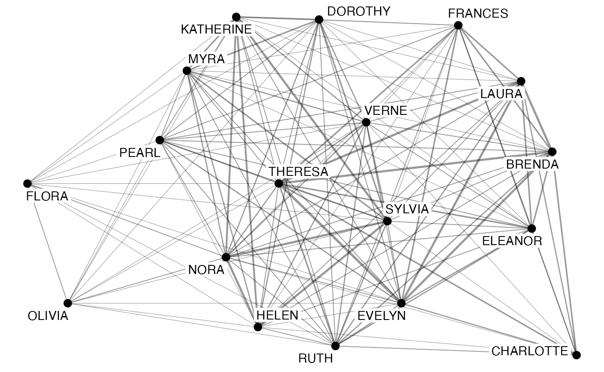
event_graph <- project_cols(southern_women)
autographr(event_graph)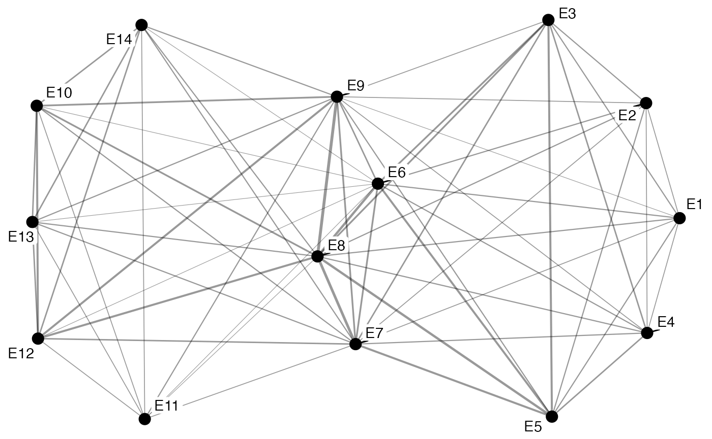
Which women/events ‘bind’ which events/women? Let’s return to the question of cohesion.
graph_equivalency(southern_women)
#> [1] 0.4871634
graph_transitivity(women_graph)
#> [1] 0.9283963
graph_transitivity(event_graph)
#> [1] 0.8310811What do we learn from this?
Task/Unit Test
- What is the difference between communities and components?
- Produce a plot comparing 3 community detection procedures used here on a (women) projection of the southern_women dataset. Identify which you prefer, and explain why.
- Explain in no more than a paragraph why projection can lead to misleading transitivity measures.
- Explain in no more than a paragraph how structural balance might lead to group identity.